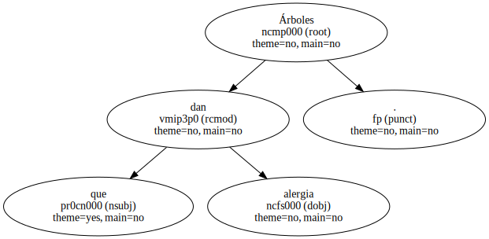

Árboles que dan alergia.
El señor Francisco Aliaga manifiesta en su carta publicada en esta sección el pasado día 26 , que nadie se preocupa por la excesiva presencia de plátanos que hay en la ciudad , en referencia a los problemas alérgicos de su familia.
Precisamente , para debatir el tema del arbolado viario , el pasado año elaboramos un plan estratégico que se presentó públicamente en unas jornadas en el Hivernacle del parque de la Ciutadella.

Desde Parcs i Jardins trabajamos para hacer realidad este plan que , sin duda , mejorará la calidad y diversidad del arbolado de la ciudad.
Con respecto a los árboles que cita de la calle de Almeria , se trata de los Tipuana , una especie que vive muy bien en las calles de Barcelona.